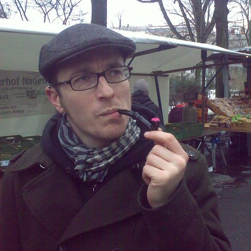
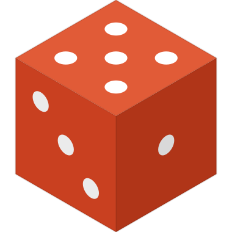
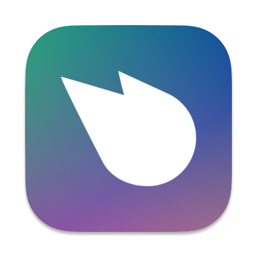

silverbucket
I'm Nick Jennings, a full-stack developer with over twenty years building for the web, and a core contributor to open-source projects focused on decentralization and the open web — most notably Kosmos, Sockethub, and remoteStorage.
Outside of code, I play banjo, fiddle, drums, and various electronic instruments across several bands and solo projects, and I led a documentary series filming musicians in Senegal.
Open Source
Group communication for the 21st century
A protocol gateway for the Web
An open protocol for per-user storage on the Web
A JavaScript library for querying WebFinger records
Apps

Setlist Roller Dice-powered setlist generator that optimizes for smooth transitions during live performances
Hyperchannel Unhosted chat app connecting to XMPP and IRC via SockethubLibraries & tools
Support open-source work bc1q56c3akjml6c28mrk734m9yc8p46dsmtqj7epz8 slvrbckt@kosmos.org
Music & Film
Music has been part of my life since I was young — old-time, punk, electronic, and plenty in between. These days I play in a handful of projects around Prague and beyond, and record solo electronic stuff as Hurphendale. In 2019 a trip to Senegal turned into a documentary project that I'm still working on.
nickjenningsmusic.com All music projects, recordings, and bandsBanjo, fiddle, drums, bass, guitar, synths, modular, electronics